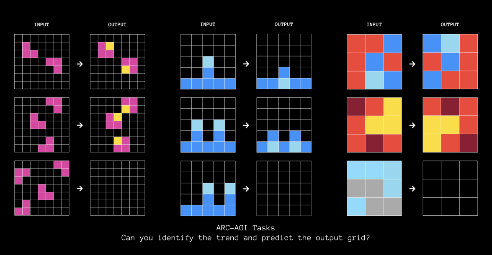

January 2026
The Tiny Recursive Model (TRM) achieves strong performance on ARC-AGI through recursive reasoning, but relies on learned puzzle-specific embeddings that limit generalization to unseen tasks. We present ETRM (Encoder-based TRM), which replaces this embedding lookup with a neural encoder that computes task representations directly from demonstration pairs. We systematically evaluate three encoder architectures—feedforward deterministic, cross-attention VAE, and iterative encoding—under strict train/evaluation separation where evaluation puzzles are never seen during training. All variants achieve moderate training accuracy (40-79%) but near-zero test accuracy (<1%), revealing fundamental challenges in extracting transformation rules from demonstrations in a single forward pass. Our analysis identifies encoder collapse and the absence of task-specific feedback signals as key failure modes, suggesting that test-time optimization approaches like those used in Latent Program Networks may be necessary for true few-shot generalization.
The Abstraction and Reasoning Corpus (ARC-AGI) benchmark [1] was designed to test abstract reasoning and few-shot learning capabilities. Each task presents 2-5 demonstration pairs showing an input-output transformation, followed by test inputs where the model must infer and apply the same transformation. This format explicitly tests whether systems can extract transformation rules from examples and generalize to new inputs.
Recent work has achieved surprising success on this benchmark. The Tiny Recursive Model (TRM) [2] achieves 45% accuracy on ARC-AGI-1 with only 7 million parameters, outperforming much larger models including GPT-4. TRM’s key innovation is recursive reasoning: it iteratively refines predictions through nested loops with deep supervision at each step.
Analysis by the ARC Prize Foundation [3] and subsequent work revealed a critical limitation in TRM’s approach. TRM uses puzzle_id embeddings: each task is assigned a unique learned vector that conditions the model’s predictions. During inference, the model receives only the input grid and this puzzle_id—it never actually processes the demonstration pairs to extract transformation rules.
This means transformation rules are memorized in embedding weights during training, not inferred from demonstrations at test time. The evidence is compelling: when researchers trained the related HRM model only on the 400 evaluation tasks [3], performance dropped from 41% to just 31%—still remarkably high for a model that has only seen those specific tasks. Furthermore, replacing puzzle_id with a random token results in 0% accuracy [4]. The model cannot function without task-specific embeddings it has already learned.
This project asks: Can we replace task-specific embeddings with an encoder that extracts transformation rules directly from demonstration pairs at test time? Such an approach would enable true few-shot generalization to novel tasks never seen during training—the original intent of the ARC benchmark. The architectural comparison between TRM’s embedding-based approach and our encoder-based approach is illustrated in Section 3.
We present ETRM (Encoder-based TRM), an architecture that replaces TRM’s puzzle_id lookup with a neural encoder that processes demonstration pairs:
Encoder-based architecture: We design and implement ETRM, which computes task representations from demonstrations rather than retrieving memorized embeddings.
Systematic evaluation of encoder designs: We evaluate three encoder paradigms—deterministic transformers, variational encoders, and iterative encoding with adaptive computation—to understand what architectural choices matter.
Strict train/eval separation: We implement a protocol where evaluation puzzles and their demonstrations are never seen during training, enabling measurement of true generalization.
Analysis of failure modes: We identify and analyze why encoder-based approaches struggle, including gradient starvation during training and the fundamental asymmetry between learning embeddings over many gradient updates versus extracting rules in a single forward pass.
Our results are primarily negative but informative:
These results highlight a fundamental asymmetry: TRM refines each puzzle embedding over hundreds of thousands of gradient updates during training, while we ask the encoder to extract equivalent information in a single forward pass with no task-specific supervision. The most promising path forward appears to be adding test-time optimization with self-supervised signals, as demonstrated by Latent Program Networks [5].
The Abstraction and Reasoning Corpus (ARC) was introduced by Chollet [1] as a benchmark designed to measure abstract reasoning and skill acquisition efficiency in AI systems. Unlike most machine learning benchmarks that test interpolation within a training distribution, ARC explicitly requires out-of-distribution generalization: the hidden test set contains tasks that follow different underlying rules than those seen during training.
Each ARC task consists of 2-5 demonstration pairs showing an input grid and its corresponding output grid, followed by 1-2 test inputs for which the system must predict the output. Grids can be up to 30×30 cells, with each cell containing one of 10 possible values (typically rendered as colors). The demonstration pairs implicitly specify a transformation rule, and the challenge is to infer this rule and apply it correctly to novel test inputs. Figure 1 shows an example task where the rule involves extracting and recoloring a shape.
 Figure 1: Example ARC puzzles. Each task shows 2-5 demonstration pairs and test inputs requiring the model to infer and apply the transformation rule.
What makes ARC particularly challenging is twofold. First, every task follows a different underlying logic—there is no single algorithm that solves all tasks. Second, compute efficiency is an explicit goal: competition submissions must operate within fixed hardware constraints and capped time budgets, preventing brute-force scaling as a solution strategy. Chollet posits that solving ARC requires only “core knowledge priors” that humans possess innately: objectness and elementary physics (cohesion, persistence), goal-directedness, basic numerics, and elementary geometry and topology [1].
A productive way to understand ARC is through the lens of program synthesis: given demonstration input-output pairs, find the shortest program P such that P(input) = output for all demonstrations [6]. This framing unifies seemingly disparate approaches under a common conceptual lens and clarifies their trade-offs.
Li et al. [6] and Hemens [7] organize ARC approaches along three orthogonal axes, drawing on foundational work in neurosymbolic programming [8].
Inference Mode: Induction vs Transduction. Inductive approaches first infer an explicit program or rule from the demonstrations, then execute that program on test inputs. This produces interpretable explanations but requires successful program search. Examples include DSL-based synthesis and LLM code generation. Transductive approaches instead directly predict the test output from demonstrations and test input combined, without constructing an explicit intermediate program. The transformation rule remains implicit in network activations. Li et al. [6] show these approaches exhibit a “skill split”: induction excels at counting, arithmetic, and long-horizon logic, while transduction handles noisy inputs, gestalt perception, and topological reasoning more effectively. This complementarity explains why top-performing systems ensemble both strategies.
Program Representation: Discrete vs Continuous. Discrete representations (DSL primitives, Python code) offer perfect precision, natural compositionality, and interpretability, but are non-differentiable and face combinatorial search spaces. Continuous representations (neural network weights, latent vectors, learned embeddings) enable gradient-based optimization but sacrifice precision guarantees and make completeness difficult to verify [8].
Program Search: Heuristic vs Learned. Hand-crafted heuristics (brute-force enumeration, minimum description length criteria) are efficient when well-engineered but limited in scope. Gradient-based search (SGD on weights, gradient ascent in latent spaces) leverages differentiability but can get stuck in local optima. Learned search (thinking models, recursive refinement) represents the most powerful paradigm, where the search procedure itself is learned from data [7].
Our work, ETRM, occupies a specific position in this taxonomy: it is a transductive approach using continuous representation (encoder-derived latent vectors) with learned search (TRM’s recursive decoder).
Table 1 summarizes major approaches to ARC organized by their position in the taxonomy.
[Table 1: Taxonomy of ARC approaches by program representation and search strategy]
| Approach | Program Representation | Program Search |
|---|---|---|
| DSL search (Icecuber) | Discrete (custom DSL) | Hand-crafted heuristics |
| LLM program synthesis | Discrete (Python) | LLM sampling + refinement |
| LLM + TTT (ARChitects, NVARC) | Neural (weights + prompt) | Gradient-based (SGD) |
| Latent Program Networks | Neural (latent vector) | Gradient-based (test-time) |
| TRM/HRM | Neural (puzzle embedding) | Learned (recursive decoder) |
| Thinking models | Neural (weights + thinking tokens) | Learned (implicit search) |
Several key observations emerged from ARC Prize 2024-2025 [9], [10]. Test-time adaptation proved crucial for generalization—the ARC Prize 2024 Technical Report notes that no static-inference transduction solution exceeds 11% accuracy, while test-time training approaches reach 55%+. Refinement loops emerged as the central theme in 2025: iteratively improving programs or outputs based on feedback signals. Ensembling transductive and inductive methods remains essential for top performance, and data augmentation with voting is universally employed.
As of January 2026, the ARC-AGI-2 leaderboard shows frontier LLMs with extended thinking achieving 45-54% (GPT-5.2 Pro, Gemini 3 Deep Think), while the Kaggle competition winner NVARC achieved 24% at $0.20/task by combining test-time training with TRM components. TRM alone reaches approximately 6% on ARC-AGI-2 and 40% on ARC-AGI-1. Humans achieve 100% on ARC-AGI-2.
Wang et al. [11] introduced HRM, a brain-inspired architecture with two coupled recurrent modules operating at different timescales. The high-level module reasons about abstract structure and strategy, while the low-level module executes pixel-level transformations. The key innovation is hierarchical convergence: the fast low-level module repeatedly converges within cycles, then gets reset by slow high-level updates. This achieves effective computational depth of N×T steps while maintaining training stability. HRM achieved 40.3% on ARC-AGI-1 with only 27M parameters trained on approximately 1000 examples.
Jolicoeur-Martineau [2] simplified HRM dramatically with the Tiny Recursive Model (TRM), which won 1st Place Paper Award at ARC Prize 2025. TRM replaces HRM’s two 4-layer networks with a single 2-layer network containing only 7M parameters, achieving 45% on ARC-AGI-1 and 8% on ARC-AGI-2.
TRM’s core mechanism involves recursive reasoning through nested loops. The model maintains two states: y (current predicted solution) and z (latent reasoning features). For each supervision step, TRM recursively updates z given the input, current answer, and current latent (n=6 times), then updates y given y and z. Deep supervision applies loss at every recursion step, allowing the model to progressively improve its answer.
Critically, TRM conditions on tasks through a puzzle_id embedding mechanism. Each puzzle (at each augmentation) receives a unique identifier mapped to a learned embedding vector. This embedding is added to the input representation and guides the transformation. The embedding matrix includes both training and evaluation puzzles, with gradients flowing through evaluation puzzle embeddings during training.
The ARC Prize 2025 analysis identified refinement loops as the central theme driving progress: “At its core, a refinement loop iteratively transforms one program into another, where the objective is to incrementally optimize a program towards a goal based on a feedback signal” [10]. TRM exemplifies this paradigm—it recursively refines its predicted output over up to 16 steps, with deep supervision providing feedback at each step.
Analysis papers have revealed a critical limitation of TRM/HRM. When puzzle_id embeddings are replaced with blank or random tokens, accuracy drops to 0%—the model cannot function without task-specific embeddings [4]. Furthermore, analysis shows that “cross-task transfer learning has limited benefits” and “most performance comes from memorizing solutions to specific tasks” [10]. HRM trained only on evaluation tasks still achieves approximately 31%, suggesting the model memorizes task-to-transformation mappings rather than learning general reasoning.
Test-time augmentation contributes significantly: approximately 11% of performance comes from generating 1000 augmented samples and voting on the most common answer. The implication is clear: while TRM/HRM achieve strong results, they deviate from ARC’s intended few-shot paradigm by memorizing task mappings rather than extracting rules from demonstrations.
This limitation becomes acute at scale. NVARC, the 1st place solution in ARC Prize 2025, explicitly notes that TRM’s puzzle embedding table requires 51 billion parameters for 100k puzzles with 1000 augmentations each—far exceeding practical memory constraints [12]. They were forced to reduce to 3k puzzles with 256 augmentations, fundamentally limiting what TRM could learn from their 103k synthetic puzzle dataset.
Bonnet et al. [5] introduced Latent Program Networks (LPN), the approach most conceptually related to our encoder-based method. LPN learns a continuous latent space of implicit programs through an encoder-decoder architecture. The encoder (a small transformer) maps demonstration input-output pairs to a latent program vector of dimension 256. The decoder acts as a neural executor, generating output grids given a latent program and test input.
The key innovation is test-time gradient search. Starting from the encoder’s initial estimate, LPN performs gradient ascent in latent space to find programs that better explain the demonstrations. Using leave-one-out loss on demo pairs as a signal, this search doubles out-of-distribution performance (7.75% to 15.5% on ARC-AGI-1 evaluation). LPN achieves 9.5% on the evaluation set with a 178M parameter model trained from scratch on synthetic data.
LPN demonstrates that encoding demonstrations into latent representations enables generalization to unseen tasks—but at the cost of expensive test-time optimization.
TRM, LPN, and our approach share a fundamental design choice: all three represent programs as continuous vectors rather than discrete symbolic structures. This places them in the same region of the taxonomy (Section 2.2)—continuous representation with transductive inference. Where they differ is in how they obtain this representation and how they search over it.
How the program representation is obtained: - TRM: Learned embedding lookup. Each puzzle receives a unique identifier mapped to a learned vector. This requires storing embeddings for all puzzles seen during training, leading to the 51B parameter scaling problem. - LPN: Encoder output. A transformer encoder processes demonstration pairs and produces a latent program vector. This enables generalization to unseen puzzles but requires gradient-based refinement at test time. - ETRM: Encoder output. Like LPN, we compute representations from demonstrations rather than looking them up—but we use this representation directly without test-time optimization.
How the program space is searched: - TRM: Learned/implicit search via recursive decoder. The decoder iteratively refines its prediction through nested reasoning loops, with deep supervision guiding the search. - LPN: Gradient-based search. Starting from the encoder’s estimate, gradient ascent in latent space finds programs that better explain the demonstrations. - ETRM: Learned/implicit search via recursive decoder (inherited from TRM). We adopt TRM’s recursive reasoning mechanism, avoiding expensive test-time gradient computation.
Table 2 summarizes these distinctions.
[Table 2: Comparison of TRM, LPN, and ETRM along taxonomy axes]
| Aspect | TRM | LPN | ETRM (Ours) |
|---|---|---|---|
| Program representation | Continuous (embedding) | Continuous (latent vector) | Continuous (latent vector) |
| How obtained | Learned lookup | Encoder | Encoder |
| Program search | Learned (recursive decoder) | Gradient-based | Learned (recursive decoder) |
| Processes demos at test time | No | Yes | Yes |
| Test-time optimization | No | Yes (gradient ascent) | No |
| Can generalize to unseen tasks | No | Yes | Yes (goal) |
ETRM thus combines the strengths of both approaches: LPN’s ability to compute task representations from demonstrations (enabling generalization) with TRM’s efficient recursive search (avoiding test-time optimization). As shown in Figures 2-3, ETRM replaces TRM’s puzzle_id embedding lookup with an encoder that processes demonstration pairs, enabling true few-shot generalization to puzzles never seen during training.
The Tiny Recursive Model (TRM) [2] achieves strong performance on ARC-AGI through recursive reasoning with deep supervision. However, TRM relies on a learned embedding matrix that maps puzzle identifiers to task-specific representations. Critically, this embedding matrix includes entries for both training and evaluation puzzles—their embeddings receive gradient updates during training even though their test queries are held out. This design choice means TRM cannot solve puzzles without corresponding embeddings, fundamentally limiting it to interpolation rather than true generalization.
We propose Encoder-based TRM (ETRM), which replaces the embedding lookup with a neural encoder that computes task representations from demonstration input-output pairs at inference time. This simple modification transforms TRM from a memorization-based system into one capable of true few-shot learning:
$$ \begin{aligned} \text{TRM:} \quad & \mathbf{c} = \text{EmbeddingMatrix}[\text{puzzle\_id}] \\ \text{ETRM:} \quad & \mathbf{c} = \text{Encoder}(\{(\mathbf{x}_i^{\text{in}}, \mathbf{x}_i^{\text{out}})\}_{i=1}^K) \end{aligned} $$
where c ∈ ℝT × D is the task context (T = 16 tokens, D = 512 dimensions), and K is the number of demonstration input-output pairs. The encoder learns to extract transformation rules from demonstrations, enabling generalization to any puzzle—including those never seen during training.
Our key design principle is to preserve TRM’s decoder architecture unchanged [2]. The recursive reasoning mechanism and deep supervision that make TRM effective are retained; we only modify how task context is obtained.
Before describing our encoder designs, we briefly review TRM’s architecture and its fundamental limitation.
TRM obtains task context through a learned embedding matrix indexed by puzzle identifier:
# TRM: Task context from embedding lookup
def trm_get_context(puzzle_id):
# puzzle_emb: learned matrix of shape (num_puzzles, T, D)
# Includes entries for ALL puzzles (training AND evaluation)
return puzzle_emb[puzzle_id] # Returns (T, D) contextFigure 2: TRM Architecture. Task context is obtained via embedding matrix lookup indexed by puzzle ID. The embedding matrix includes entries for both training and evaluation puzzles, limiting the model to interpolation rather than true generalization.
Critical limitation: The embedding matrix must contain an entry for every puzzle the model will encounter. Since evaluation puzzle IDs are included in the matrix and receive gradient updates during training, TRM cannot generalize to truly unseen puzzles—it can only interpolate among puzzles in its embedding matrix.
Given the task context, TRM maintains two latent states that are iteratively refined: - y: The current predicted solution (embedded) - z: A latent reasoning state
def trm_forward(x, puzzle_id, y, z, H_cycles=3, L_cycles=6):
# Get task context via embedding lookup (not from demos!)
c = puzzle_emb[puzzle_id] # <-- The limitation
input_emb = embed(x) + c # Add task context to input
for h in range(H_cycles):
for l in range(L_cycles):
z = f_θ(z, y + input_emb) # Refine reasoning
y = f_θ(y, z) # Update solution
return y, zThe network fθ is a small 2-layer transformer [13]. Despite its simplicity, the recursive application creates an effective depth of H × (L + 1) × 2 = 42 layers.
TRM uses deep supervision: the carry state (y, z) persists across training steps, with each step providing supervision. A Q-head learns when to halt, implementing Adaptive Computation Time (ACT) [14]. During training, an exploration probability pexplore encourages the model to sometimes continue beyond the Q-head’s recommendation.
We explore three paradigms for the demonstration encoder, each embodying a different hypothesis about what makes an effective task representation.

Figure 3: ETRM Architecture. Task context is computed from demonstration input-output pairs via a neural encoder, replacing the embedding matrix lookup. This enables generalization to novel tasks never seen during training.
Hypothesis: A fixed forward pass through the encoder can extract sufficient information from demonstrations to characterize the transformation rule.
The encoder operates in two stages:
Stage 1: Per-Demo Grid Encoding. Each demonstration pair (xiin, xiout) is encoded independently. We concatenate the input and output grids and process them with a transformer [13]:
hi = TransformerEnc([xiin; xiout]) ∈ ℝ2S × D
where S = 900 is the sequence length (flattened 30×30 grid). The transformer uses N self-attention layers with rotary position embeddings. We then pool to a single vector:
ei = MeanPool(hi ⊙ mi) ∈ ℝD
where mi masks padding tokens.
Stage 2: Set Aggregation via Cross-Attention. To aggregate the K demo encodings {ei}i = 1K into the final context, we use cross-attention with learnable query tokens [15]:
c = CrossAttn(Q, E, E) ∈ ℝT × D
where Q ∈ ℝT × D are T = 16 learnable query tokens and E = [e1; …; eK] ∈ ℝK × D are the stacked demo encodings. This allows each output token to selectively attend to relevant demonstrations, potentially capturing different aspects of the transformation rule.
The complete feedforward deterministic encoder is:
def deterministic_encoder(demo_inputs, demo_outputs, demo_mask):
# Stage 1: Encode each demo pair
B, K, S = demo_inputs.shape
encodings = []
for i in range(K):
h = transformer_enc(concat(demo_inputs[:,i], demo_outputs[:,i]))
e = mean_pool(h, mask=demo_mask[:,i])
encodings.append(e)
E = stack(encodings, dim=1) # (B, K, D)
# Stage 2: Cross-attention aggregation
Q = learnable_queries.expand(B, -1, -1) # (B, T, D)
context = cross_attention(Q, E, E, mask=demo_mask)
return context # (B, T, D)Hypothesis: A variational bottleneck encourages learning a structured, smooth latent space of transformation rules, improving generalization to novel puzzles.
We explore two variational architectures:
Cross-Attention VAE. This variant applies the variational bottleneck after aggregating information from all demonstrations:
The KL divergence [16] regularizes toward a standard normal prior: $$ \mathcal{L}_{\text{KL}} = D_{\text{KL}}(q(\mathbf{z}|\text{demos}) \| p(\mathbf{z})) = -\frac{1}{2}\sum_j \left(1 + \log \sigma_j^2 - \mu_j^2 - \sigma_j^2\right) $$
Per-Demo VAE. Inspired by the Latent Program Network (LPN) architecture [5], this variant applies variational inference to each demonstration independently before aggregation:
The KL loss [16] averages over valid demonstrations: $$ \mathcal{L}_{\text{KL}} = \frac{1}{K}\sum_{i=1}^K D_{\text{KL}}(q(\mathbf{z}_i|\mathbf{x}_i, \mathbf{y}_i) \| p(\mathbf{z})) $$
Key Difference: Cross-Attention VAE applies the bottleneck after seeing all demos together, potentially capturing cross-demo patterns. Per-Demo VAE treats each demo independently, relying on mean aggregation to combine information—simpler but potentially losing demo interactions.
Note on LPN: We adopt LPN’s encoder architecture [5] for comparison, but we do not use their gradient-based test-time search. Our encoders produce fixed representations without test-time optimization.
Hypothesis: The same inductive bias that makes recursive refinement effective for the decoder might also benefit the encoder. Rather than computing task context once, we let the encoder refine its representation alongside the decoder’s reasoning.
This architecture mirrors TRM’s decoder structure within the encoder:
Encoder State: The encoder maintains dual latent states analogous to the decoder: - zeH: High-level context (serves as output to decoder) - zeL: Low-level reasoning state
Hierarchical Refinement: Each ACT [14] step, the encoder refines its states using the same H/L loop pattern as the decoder:
def iterative_encoder_step(z_e_H, z_e_L, demo_input, H_cycles, L_cycles):
# demo_input: aggregated demo representation
for h in range(H_cycles):
for l in range(L_cycles):
z_e_L = L_level(z_e_L, z_e_H + demo_input)
z_e_H = L_level(z_e_H, z_e_L)
return z_e_H, z_e_L # z_e_H is context for decoderJoint Evolution: Unlike feedforward encoders that compute context once, the iterative encoder’s carry state persists across ACT steps [14]. The encoder refines its understanding of the transformation rule as the decoder refines its prediction—a form of joint reasoning.
Rationale: If recursive refinement helps the decoder progressively improve predictions, perhaps it can similarly help the encoder progressively clarify its understanding of the task. This is speculative—it’s unclear whether encoding benefits from iteration the same way decoding does.
For all encoder types, integration with the TRM decoder follows a consistent pattern:
The decoder architecture remains unchanged from original TRM [2]: - Same dual-state design (y, z) - Same H/L cycle structure - Same ACT [14] halting mechanism - Deep supervision at each step
A critical difference from TRM is our enforcement of complete data separation:
| Split | Puzzles | Purpose |
|---|---|---|
| Training | ~560 groups (ARC-AGI training + concept) | Model training |
| Evaluation | ~400 groups (ARC-AGI evaluation) | Testing generalization |
Key Property: Evaluation puzzles’ demonstrations are never seen during training. The encoder must extract transformation rules from demos it encounters for the first time at test time—true few-shot evaluation.
Following TRM, we apply approximately 1000 augmented versions per puzzle:
Consistency Constraint: The same augmentation is applied to all components of a puzzle (all demos + test input/output), preserving the transformation rule’s structure.
During development, we discovered a critical issue with caching encoder outputs.
Problem: Our initial implementation computed encoder output once when a sample started and cached it in the carry state. With dynamic halting, only samples that reset receive fresh encoder outputs—approximately 2% of samples per step. This meant the encoder received gradients from only 2% of the data, severely limiting its learning.
Symptom: Training accuracy plateaued at ~35% with minimal encoder learning.
Solution: Re-encode the full batch at every ACT step (no caching):
def forward_step(carry, batch):
# ALWAYS encode - no caching
context = encoder(batch['demo_inputs'],
batch['demo_outputs'],
batch['demo_mask'])
# Proceed with decoder...
output = decoder(carry, batch['inputs'], context)
return outputThis ensures 100% gradient coverage for the encoder, at the cost of additional computation. After this fix, training accuracy improved from 35% to over 86%.
We initialize the decoder from TRM’s pretrained weights, which provides two benefits:
We explore two training modes: - Frozen Decoder: Only encoder parameters updated (faster, ensures encoder learns) - Joint Fine-tuning: Both encoder and decoder updated (potentially better final performance)
For VAE-based encoders, training includes the KL divergence term:
ℒ = ℒCE + β ⋅ ℒKL
where ℒCE is the cross-entropy reconstruction loss and β weights the KL term.
Practical Considerations: - KL Annealing: Start with β = 0, gradually increase to target value - Numerical Stability: Clamp log σ2 to [−10, 10] to prevent overflow in exp - Evaluation Mode: Use mean (μ) without sampling for deterministic evaluation
Table 3: Encoder architecture design space
| Encoder Type | Aggregation | Variational | Parameters | Key Property |
|---|---|---|---|---|
| Feedforward Deterministic | Cross-attention | No | ~15M | Simple, stable baseline |
| Cross-Attention VAE | Cross-attention | Post-aggregation | ~16M | Regularized latent space |
| Per-Demo VAE | Mean | Per-demo | ~1M | LPN-inspired, compact |
| Iterative (TRM-style) | Mean | No | ~8M | Joint refinement with decoder |
Each architecture embodies different hypotheses about task representation: - Cross-attention vs. Mean: Can selective attention to specific demos improve representation? - Variational vs. Deterministic: Does KL regularization improve generalization? - Iterative vs. Feedforward: Does recursive refinement benefit encoding?
We evaluate these hypotheses empirically in Section 4.
We evaluate ETRM’s ability to generalize to puzzles whose demonstrations were never seen during training. Our experiments reveal a striking negative result: all encoder architectures achieve 0% accuracy on held-out puzzles despite reasonable training performance, a phenomenon we attribute to encoder collapse.
We train and evaluate on ARC-AGI-1, which contains 400 training puzzles and 400 evaluation puzzles [1]. Following TRM [2], we augment the training set with approximately 160 additional “concept” puzzles that target specific transformation primitives.
Data Augmentation. Each puzzle is augmented approximately 1000 times using: - Color permutation: Random shuffle of colors 1-9 (black remains fixed) - Dihedral transforms: 8 geometric transformations (4 rotations and 2 reflections) - Translation: Random positioning within the 30x30 grid (training only)
The same augmentation is applied consistently to all components of a puzzle (demonstrations and test queries), preserving the transformation rule’s structure.
Critical Distinction: True Few-Shot Evaluation. A key difference between ETRM and TRM evaluation lies in data separation. In TRM, evaluation puzzle identifiers exist in the embedding matrix and receive gradient updates during training—the model has effectively “seen” these puzzles [3]. In ETRM, we enforce strict separation: evaluation puzzle demonstrations are never seen during training. The encoder must extract transformation rules from demonstrations it encounters for the first time at test time. This is true few-shot evaluation.
Table 4: Dataset split summary
| Split | Puzzle Groups | Augmentation Factor | Total Samples | Use |
|---|---|---|---|---|
| Training | ~560 (training + concept) | ~1000x | ~560,000 | Model training |
| Evaluation | ~400 (evaluation) | ~1000x | ~400,000 | True few-shot testing |
Metrics. We report Pass@k accuracy, where a puzzle is considered solved if the correct answer appears among the top-k most common predictions. We report Pass@1 (primary metric), Pass@2, and Pass@5.
Voting Mechanism. Following TRM [2], we aggregate predictions across all augmented versions of each puzzle (~1000 per puzzle). Each augmented version produces a prediction, which is inverse-transformed back to the original coordinate space. The final prediction is determined by majority voting across these predictions.
Subset Evaluation. Due to computational constraints, we evaluate on a subset of 32 puzzle groups, representing approximately 8% of the full evaluation set. Evaluating the full set requires approximately 24 hours per model, as voting aggregates predictions across ~1000 augmented versions of each puzzle. While subset evaluation limits statistical power, the results are sufficiently clear (0% vs 37%+ accuracy) that the subset provides reliable signal.
Decoder Initialization. We initialize the decoder from pretrained TRM weights, providing the benefit of an already-capable recursive reasoning module. Critically, the decoder is not frozen—gradients flow through all decoder parameters during training. This ensures that any failure to generalize cannot be attributed to a frozen decoder that cannot adapt to encoder outputs.
Hyperparameters. We use batch size 256 for deterministic and iterative encoders, reduced to 128 for Cross-Attention VAE due to memory constraints. ACT maximum steps is set to 16 with exploration probability 0.5. Following Section 3.5.3, we re-encode the full batch at every ACT step to ensure adequate gradient flow to the encoder.
Table 5: Training hyperparameters
| Parameter | Deterministic | Variational | Iterative |
|---|---|---|---|
| Batch size | 256 | 128 | 256 |
| Learning rate | 1e-4 | 1e-4 | 1e-4 |
| ACT max steps | 16 | 16 | 16 |
| Exploration prob | 0.5 | 0.5 | 0.5 |
| Grad clip norm | 1.0 | 1.0 | 1.0 |
| Re-encode batch | Yes | Yes | Yes |
| Decoder frozen | No | No | No |
All experiments were conducted on a server with 4 NVIDIA A100 80GB GPUs. Training used distributed data-parallel execution via PyTorch’s torchrun across all 4 GPUs. Each ETRM variant required approximately 12-24 hours to reach 175k training steps. The TRM baseline required approximately 48 hours to reach convergence at 518k steps.
We first reproduce TRM training to establish a baseline for comparison. Results at two checkpoints:
Table 6: TRM baseline results
| Model | Params | Pass@1 | Pass@2 | Pass@5 | Train Acc | Steps |
|---|---|---|---|---|---|---|
| TRM (155k steps) | 7M | 37.38% | 41.25% | 47.12% | 92.50% | 155k |
| TRM (converged) | 7M | 41.75% | 48.75% | 52.25% | 98.44% | 518k |
At 155k steps—comparable to our ETRM training duration—TRM achieves 37.38% Pass@1 accuracy with 92.50% training accuracy. With continued training to 518k steps, performance improves to 41.75% Pass@1 and 98.44% training accuracy.
We evaluate three encoder architectures from Section 3.3, each embodying a different hypothesis about effective task representation:
Table 7: ETRM results
| Model | Encoder Type | Params | Pass@1 | Pass@2 | Pass@5 | Train Acc | Steps |
|---|---|---|---|---|---|---|---|
| ETRM-Deterministic | Feedforward Deterministic (Section 3.3.1) | 22M | 0.00% | 0.50% | 0.50% | 78.91% | 175k |
| ETRM-Variational | Cross-Attention VAE (Section 3.3.2) | 23M | 0.00% | 0.00% | 0.00% | 40.62% | 174k |
| ETRM-Iterative | Iterative TRM-style (Section 3.3.3) | 15M | 0.00% | 0.25% | 0.25% | 51.17% | 87k |
Complete Generalization Failure. All three encoder architectures achieve 0% Pass@1 accuracy on held-out puzzles. This is despite achieving 40-79% training accuracy—the models learn to solve training puzzles but completely fail to generalize.
Architecture-Agnostic Failure. The failure is consistent across fundamentally different encoder designs: feedforward deterministic, variational with KL regularization, and iterative with joint refinement. This suggests the problem is fundamental to the encoder-based approach rather than a matter of architectural choice.
Table 8: Summary comparison at comparable training time
| Model | Approach | Params | Pass@1 | Pass@2 | Pass@5 | Train Acc |
|---|---|---|---|---|---|---|
| TRM (155k) | Embedding lookup | 7M | 37.38% | 41.25% | 47.12% | 92.50% |
| ETRM-Deterministic | Feedforward encoder | 22M | 0.00% | 0.50% | 0.50% | 78.91% |
| ETRM-Variational | VAE encoder | 23M | 0.00% | 0.00% | 0.00% | 40.62% |
| ETRM-Iterative | Recurrent encoder | 15M | 0.00% | 0.25% | 0.25% | 51.17% |

Figure 4: Training accuracy over time for TRM and ETRM variants. TRM (dashed line) reaches 98% accuracy and continues improving. ETRM variants plateau at lower accuracies: Feedforward Deterministic (79%), Iterative (51%), Cross-Attention VAE (41%).
Figure 4 shows training accuracy over time. TRM (dashed line) reaches 98% accuracy and continues improving throughout training. In contrast, ETRM variants plateau at substantially lower accuracies: the Feedforward Deterministic encoder reaches 79%, the Iterative encoder plateaus around 51%, and the Cross-Attention VAE struggles to exceed 41%.
The training accuracy gap between TRM and ETRM-Deterministic (92% vs 79% at comparable steps) already indicates that the encoder-based approach faces optimization challenges. However, the more striking observation is the complete disconnect between training and test performance for ETRM—79% training accuracy translates to 0% test accuracy.
To understand the 0% test accuracy, we analyze the encoder outputs directly. We measure cross-sample variance: how different are encoder outputs across different puzzles?

Figure 5: Encoder output statistics. Analysis of cross-sample variance, within-sample variance, and output distributions reveals encoder collapse across all variants.
Table 9: Encoder collapse analysis
| Model | Cross-Sample Variance | Interpretation |
|---|---|---|
| ETRM-Deterministic | 0.36 | Low—collapsed |
| ETRM-Variational | 3.33 | Higher—KL prevents full collapse |
| ETRM-Iterative | 0.15 | Very low—severely collapsed |
Diagnosis: Encoder Collapse. The encoders learn to produce near-constant outputs regardless of input demonstrations. Cross-sample variance measures how much encoder outputs vary across different puzzles—low variance indicates the encoder produces similar representations for different transformation rules.
The Feedforward Deterministic encoder shows cross-sample variance of only 0.36, indicating highly similar outputs across puzzles. The Iterative encoder is even more severely collapsed at 0.15. Interestingly, the Cross-Attention VAE shows higher variance (3.33), likely because the KL regularization toward a standard normal prior prevents complete collapse—yet this does not translate to better test accuracy.
Mechanism. With collapsed encoder outputs, the decoder receives essentially the same “task representation” for every puzzle. The decoder cannot distinguish between different transformation rules, explaining the complete failure on held-out puzzles. During training, the model achieves reasonable accuracy by memorizing input-output mappings for specific training examples rather than learning to extract and apply transformation rules.

Figure 6: Predictions on held-out puzzles. ETRM produces structured outputs but applies incorrect transformations (left columns), while TRM produces correct predictions (right columns). This is consistent with encoder collapse preventing task-specific context from reaching the decoder.
Figure 6 shows qualitative predictions on held-out evaluation puzzles. ETRM produces structured outputs—not random noise—but applies incorrect transformations. For example, where the ground truth requires a rotation operation, ETRM might produce a color-filling pattern unrelated to the demonstrated rule. This is consistent with encoder collapse: the decoder has learned some transformation behavior, but without puzzle-specific context, it cannot select the correct transformation.
In contrast, TRM (which has embeddings for these puzzles) produces predictions that match or closely approximate the ground truth, demonstrating that the decoder architecture is capable of solving these puzzles given appropriate task context.
Our experiments reveal several important findings:
Complete generalization failure. All ETRM variants achieve 0% Pass@1 accuracy on held-out puzzles, despite training accuracies ranging from 41% to 79%. The encoder-based approach fails to enable true few-shot learning.
Encoder collapse explains the failure. Analysis of encoder outputs reveals that all encoders produce near-constant outputs regardless of input demonstrations. The encoders fail to extract puzzle-specific information, instead collapsing to a fixed representation.
Architecture-agnostic failure. Feedforward, variational, and iterative encoder architectures all fail similarly. This suggests the problem is fundamental to learning to encode transformation rules from demonstrations, not a matter of architectural choice.
Training-test gap. The Feedforward Deterministic encoder achieves 79% training accuracy but 0% test accuracy—a complete disconnect. The model memorizes training puzzle input-output mappings rather than learning generalizable rule extraction.
Contrast with TRM. TRM achieves 37% Pass@1 at comparable training steps by memorizing puzzle embeddings. While not true generalization, this demonstrates the decoder’s capability when given appropriate task context—a capability the collapsed encoders fail to leverage.
Implications. Replacing learned embeddings with a demonstration encoder is a natural idea for enabling generalization, but our experiments reveal this is substantially harder than expected. The encoder consistently collapses to constant outputs rather than learning to extract transformation rules from demonstrations. Understanding and preventing this collapse is essential for progress on encoder-based approaches to few-shot program induction.
Our experiments demonstrate a striking negative result: all ETRM variants achieve reasonable training accuracy (40-79%) but complete failure on held-out puzzles (0% Pass@1). This section analyzes why the encoder-based approach fails, what we learned from the failure, and what directions appear most promising for future work.
The core observation demands explanation: how can a model achieve 79% training accuracy yet 0% test accuracy? We consider two hypotheses:
(A) Task Difficulty. Extracting transformation rules from demonstrations in a single forward pass—without any feedback signal—is fundamentally harder than refining puzzle-specific embeddings over many gradient updates. The encoder must perform a form of meta-learning: learning to learn from examples [2].
(B) Implementation Issues. Our encoder designs, training procedures, or hyperparameter choices may have flaws that prevented learning useful representations.
Our experiments provide evidence for hypothesis (A). Three fundamentally different encoder architectures—feedforward deterministic, variational with KL regularization, and iterative with joint refinement—all failed. The ETRM-Iterative experiment is particularly informative: despite providing iterative encoding analogous to TRM’s recursive decoder, it still achieved 0% test accuracy. This suggests the problem is not insufficient computation but rather the absence of a guiding signal during refinement.
We cannot fully rule out hypothesis (B), but the consistent failure pattern across architectures points toward task difficulty as the primary factor.
Understanding why TRM succeeds while ETRM fails requires examining how each learns transformation rules.
How TRM learns. TRM [2] refines each puzzle embedding over hundreds of thousands of training steps. Each of the ~876,000 puzzle-augmentation combinations receives approximately 500+ gradient updates during training. The embedding gradually captures task-specific patterns through this extended optimization—a significant advantage where the model has many opportunities to learn each transformation.
What we ask the encoder to do. ETRM’s encoder must extract the transformation rule from just 2-5 demonstration pairs in a single forward pass, producing a representation that works for transformations never seen during training. This is meta-learning: the encoder must learn how to learn from examples.
The difficulty gap becomes clearer when we compare refinement mechanisms:
Table 10: Refinement mechanisms comparison
| Approach | Refinement | Feedback Signal |
|---|---|---|
| TRM [2] | Gradient descent on embedding | Ground-truth labels (supervised) |
| LPN [5] | Gradient ascent in latent space | Demo consistency (self-supervised) |
| ETRM (feedforward) | Single forward pass | None |
| ETRM-Iterative | Multiple encoder iterations | None |
Our ETRM-Iterative experiment tested whether iteration alone could help—it could not. The issue is not computation but feedback. TRM [2] refinement is guided by gradients from ground-truth labels. LPN [5] test-time search is guided by leave-one-out demo consistency. ETRM’s encoder iterates without any signal indicating whether its representation is improving.
Takeaway: Effective latent space refinement requires a feedback signal—either supervised (labels) or self-supervised (demo consistency). Unguided iteration is insufficient.
To understand the failure mechanism, we analyzed encoder outputs directly (Section 4.4.2). Cross-sample variance measures how differently the encoder responds to different puzzles:
Table 11: Cross-sample variance analysis
| Model | Cross-Sample Variance | Train Acc |
|---|---|---|
| ETRM-Deterministic | 0.36 | 78.91% |
| ETRM-Variational | 3.33 | 40.62% |
| ETRM-Iterative | 0.15 | 51.17% |
The Feedforward Deterministic encoder shows low variance (0.36)—it produces similar outputs regardless of which demonstrations are provided. The Iterative encoder is even more collapsed (0.15). With near-constant encoder outputs, the decoder receives essentially the same “task representation” for every puzzle.
This explains the training-test disconnect. The decoder likely learns to ignore the uninformative encoder signal and instead memorizes input-output mappings for training examples directly. The model achieves high training accuracy through memorization [3], but without discriminative encoder representations, it cannot generalize to new transformations.
We hypothesized that variational encoders might encourage more diverse representations through KL regularization. The Cross-Attention VAE achieved 10x higher cross-sample variance (3.33 vs 0.36) compared to the deterministic encoder—yet still 0% test accuracy.
Higher variance does not equal useful variance. The variational encoder produces diverse representations, but these representations are not discriminative for transformation rules. The KL penalty toward a standard normal prior may push representations away from task-relevant structure. Additionally, VAE regularization prevented decoder memorization (lower 40.62% training accuracy) without producing transformation-relevant features.
Takeaway: Variance alone is insufficient; representations must capture transformation-relevant information. Diversity without discriminability does not enable generalization.
Examination of ETRM predictions on held-out puzzles (Figure 6, Section 4.4.3) reveals several failure modes:
Collapsed outputs. Some predictions are nearly uniform (solid color), directly reflecting encoder collapse propagating to the decoder.
Structured but wrong. Some predictions show grid structure and color patterns, but the wrong transformation is applied—e.g., color filling where rotation was required.
Partial correctness. Occasionally, predictions capture some aspect of the transformation (correct colors, wrong arrangement), suggesting the decoder has learned general grid manipulation skills.
These patterns are consistent with a model that has learned something about ARC transformations from training but cannot select the correct transformation without a useful encoder signal. In contrast, TRM [2] predictions (with puzzle embeddings) are often correct or close, demonstrating the decoder is capable when given appropriate task context.
Direct comparison between TRM and ETRM requires acknowledging a fundamental difference in what each model is asked to do:
Table 12: Context for TRM/ETRM comparison
| Model | Pass@1 | Train Acc | Task |
|---|---|---|---|
| TRM [2] (155k steps) | 37.38% | 92.50% | Generalize to augmented versions of known puzzles |
| TRM [2] (518k steps) | 41.75% | 98.44% | Same |
| ETRM-Deterministic (175k steps) | 0.00% | 78.91% | Generalize to entirely unseen transformations |
TRM [2] test puzzles have embeddings that receive gradient updates during training—it generalizes to different augmentations (color permutations, rotations) of puzzles it has “seen.” ETRM must generalize to transformations it has never encountered, a fundamentally harder task.
Our encoder approach does not achieve few-shot generalization. However, the comparison is not entirely fair. A more appropriate comparison would be with LPN [5], which achieves 15.5% on held-out puzzles—but only with test-time gradient optimization that we deliberately avoided.
Several practical challenges emerged during development:
Problem: Our initial implementation cached encoder outputs, resulting in only ~2% gradient coverage for the encoder per step.
Symptom: Training accuracy plateaued at 35-50% with minimal encoder learning.
Solution: Re-encode the full batch at every ACT step (no caching), ensuring 100% gradient coverage at the cost of additional computation.
Lesson: Gradient flow analysis is critical when modifying architectures with dynamic computation patterns.
Problem: Training collapsed around step 1900 due to encoder output distribution shifting faster than the decoder could adapt.
Solution: Gradient clipping (grad_clip_norm=1.0) stabilized training throughout subsequent experiments.
We introduced cross-sample variance as a diagnostic metric during training, tracking diversity of encoder outputs across the batch. Low variance proved to be an early indicator of representation collapse. This metric is essential for future encoder-based approaches.
Our experiments operated under significant resource constraints:
These results provide directional signal—0% vs 37% accuracy is unambiguous—but absolute performance numbers might improve with additional training.
We tested three encoder paradigms but did not explore alternatives that might succeed:
A different architecture might succeed where ours failed.
We cannot fully rule out implementation issues:
One known issue: EMA weights from the pretrained TRM checkpoint were not properly loaded for the decoder. This is unlikely to explain the generalization failure because the decoder was trainable and reached 79% training accuracy—the problem is generalization, not learning capacity.
The consistent failure across three architectures suggests task difficulty rather than implementation bugs, but more exploration is warranted.
Our results suggest that computing task representations in a single forward pass is insufficient for extracting transformation rules. Drawing on the program synthesis taxonomy from Section 2, we identify promising directions.
Our ETRM-Iterative experiment showed that iteration alone is insufficient—the encoder refines its representation but has no signal indicating whether it is improving. Both TRM [2] and LPN [5] succeed because they have feedback signals guiding refinement: TRM [2] uses label gradients during training, LPN [5] uses demo consistency at test time.
LPN [5] demonstrates that self-supervised gradient search in latent space can significantly improve generalization (7.75% to 15.5%). Combining ETRM with test-time optimization could provide the missing ingredient:
The common thread in successful approaches is guided refinement. Our failed ETRM-Iterative suggests unguided iteration is not enough—but guided iteration at test time may bridge the gap.
An alternative to test-time optimization is training a more discriminative encoder:
Use pretrained TRM checkpoint with all weights (including EMA) for decoder initialization, ensuring the decoder starts from the best possible state.
Our experiments reveal that replacing TRM [2] puzzle embeddings with a demonstration encoder is substantially harder than expected. Three encoder architectures—feedforward deterministic, variational, and iterative—all achieve reasonable training accuracy but complete failure on held-out puzzles. Analysis shows this stems from encoder collapse: the encoders produce near-constant outputs regardless of input demonstrations, forcing the decoder to memorize training patterns rather than learn generalizable rule extraction.
The key insight is the asymmetry between TRM [2] and ETRM. TRM [2] refines each puzzle embedding over hundreds of thousands of gradient updates during training. ETRM asks the encoder to extract equivalent information in a single forward pass with no task-specific feedback. Our ETRM-Iterative experiment shows that iteration alone does not solve this problem—the missing ingredient is a feedback signal guiding refinement.
The most promising path forward is combining ETRM’s encoder with test-time optimization using self-supervised signals, as demonstrated by LPN [5]. This would provide the guided refinement that successful approaches share while preserving the ability to generalize to truly novel puzzles.